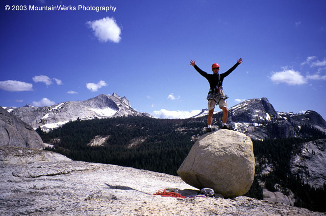
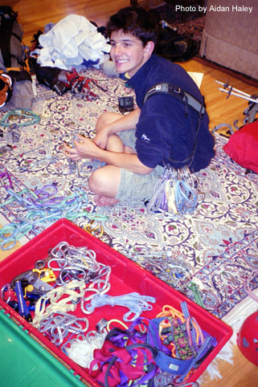
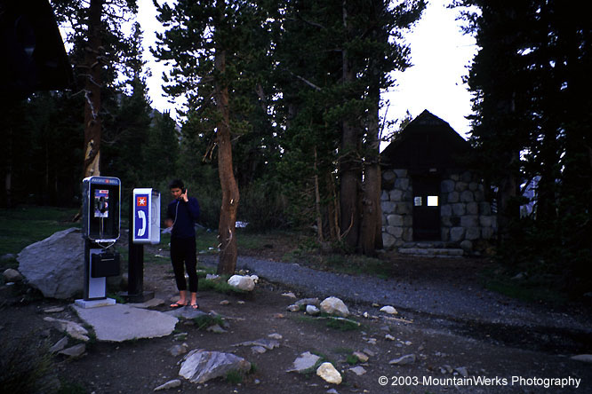
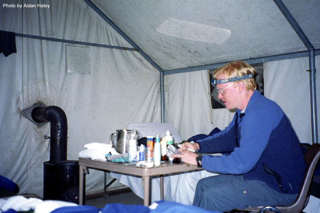
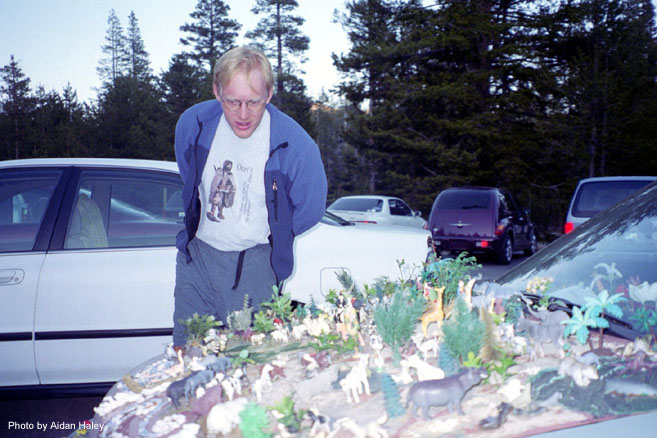

The Sierras
Various Routes
June 15-23, 2003
<font size=+3>Aidan</font> Haley and I took a week to go climbing in the Sierras. We had such a fun time on pitch after pitch of amazing granite. Lots of sunshine kept us motivated. You can click on the links below to visit detailed accounts of the climbs, and below that is a short day-to-day chronology for all the “non-climbing” stuff.
<table class=”chrono” width=500>
</table>
Saturday: We flew to Reno and rented a car for the drive to Bishop. It was great driving along the east side of the mountains and trying to identify peaks. Dozens of police cars were speeding north. We had a P.T. Cruiser, which we hated because it was hard to see the peaks from the cramped windows. In Bishop, we went to KFC for lunch, bought some food supplies and rented a bear canister. We drove to the trailhead for Bear Creek Spire, and settled in after a short hike to look at the peak. We were at 10,000 feet.
Sunday: Climb of <a href=bearcreek.html>Bear Creek Spire</a>. We got back pretty wasted, and drove down to Tom’s Place for a great country dinner. We came back and conked out.
Monday: We got up and drove north, returning the bear canister at a ranger station. Actually, it was the Lake Mono National Monument, and they were puzzled about the canister. But a phone call sorted everything out. After the spectacular drive to Toulumne, we found there was only one small campground open. We got one of the last places. In the late afternoon, I convinced Aidan to climb Lembert Dome. We climbed the very nice <a href=lembert.html>Northwest Books</a> in three pitches. We ate at the Toulumne Lodge, for the first of several great meals there. There was a huge rainstorm that evening, fueling our concerns about the weather.
Tuesday: We got up early and <a href=matthes.html>climbed Matthes Crest</a>. I’ll bet we ate at Toulumne Lodge again. I discovered the steak, man it was good! Our neighbors in the campground spent the day climbing Fairview Dome. They were a great pair of climbers from Colorado. They had a guitar I could play, and we talked about all kinds of climbs and crazy situations. We were warned about the mad circus of crowds on Fairview Dome, and our guidebook said people spend days trying to get on the climb amid the hordes. We decided to get a late start in the morning, wandering up there around 9 or 10 am.
Wednesday: We got up late and <a href=fairview.html>climbed Fairview Dome</a>. After this great experience, we treated ourselves to a night in a tent cabin. We got to take a shower (first of the trip), call homes, and have a nice dinner with a couple who used to hike in Washington. We did a miserable job getting the fire going in our cabin, using up all the newspaper. Aidan eventually figured it out, and became the fire expert for the rest of the trip. Revelling in our 2 beds each we couldn’t decide which one to sleep in. By candlelight, we recorded our pitch-by-pitch descriptions of the climbs we’d done so far, really enjoying playing it back in our heads.
Thursday: Today was a long-promised rest day. Aidan was always worried about getting to tired to climb, or maybe feeling tired of climbing. And I was always pooh-poohing such ideas, and pushing us to climb more. Well, I had managed to push the rest day out this far! Aidan, with many wistful comments and asides, had made his desire to see the valley very clear. I didn’t want to make the drive, remembering how long it could be behind a dozen Winnibagos. But how could I deny the boy? It was time to visit the Valley.
{kind=link}
So we did. Aidan saw my point about the long drive, but traffic did move pretty fast. We foolishly drove past the only gas station, and had to drive around the valley on empty, wondering how we’d make the 15-mile drive back to the station! El Capitan was huge, of course. We stopped a few times to look around. Sitting in El Cap Meadow was fun, watching parties high on the face. I felt a kind of frustration to be there as a spectator. I didn’t want to look at it because the inevitable desire to climb it would create stress! While I played that silly game with myself, Aidan was content to be Agog. We went to Camp IV, and I showed Aidan where Jeff Witt and I had camped 4 years before. We watched a gaggle of honed Euro-klimbers on a famous boulder problem. We wandered among some top-ropers. Amazingly, Aidan ran into a friend from school! I took their picture. Aidan splashed in the river, but I was content to paw at the soil , paying my homage. The empty gas tank clamered for attention, eventually leading us away.
{kind=link}
{kind=link}
{kind=link}
Dinner at Toulomne Lodge - try the steak! The tent cabin was nice and toasty with a roaring fire.
{kind=link}
Friday: After another freezing night (the fire always goes out and we shiver under 4 blankets), we got up pretty early to climb <a href=catheichorn.html>Cathedral Peak</a>. It’s the “must do” of the region, with a scenic approach and easy climbing on beautiful rock. After that and Eichorn Pinnacle, we hiked down and attempted to lay down in a meadow for a nap. Alas, the mosqitoes were intense, and we ran away. It was this day or maybe the day before that the tradition of eating lunch at the Toulumne Grill started. They had great burgers. Aidan put on his business management cap and saw all kinds of flaws in the operation. They had many employees, but none knew what they were doing. There were numerous fiascos involving change, forgotten orders, giggling in the back room, and failure to communicate. Aidan should have been in charge. We ran into Aidan’s friend Eric from Tacoma, he was a righteous fella.
Saturday: Aidan and I both wanted to climb Mt. Conness, but it’s summit was encased in clouds every afternoon. The SuperTopo guidebook warned about that situation repeatedly, and we heeded it, having appreciated all of the other advice. So instead, we climbed <a href=daff.html>West Crack on DAFF Dome</a>, then climbed <a href=gwbooks.html>Great White Books</a> on Stately Pleasure Dome. It was a great climbing day. I’d recovered from my loss of confidence on Fairview Dome, running it out on the 5.8 finger and hand cracks, which now seemed easy but still exciting. The tent cabin was getting unjustifiably expensive, and we had one more night. We decided to drive east for an hour and camp at one of the last sites below Dana Peak. It was kind of a dust bowl, but we still built a great fire and enjoyed delicious hot dogs. The good ol’ boys in the camp next door had a DVD player and a wide screen TV set up. They were watching some kind of “ultraviolence” movie judging by the ragged screams that soothed me to sleep.
Sunday: What should we do, what should we do? After looking at Tenaya Peak, we changed our mind about climbing a long 5.5 route on it. There was a potentially troublesome snowpatch on the slabs, and I had to agree with Aidan that a few steller 5.8 pitches was better than 15-ish 5.0 ones. Especially being kind of tired and lazy. So we climbed <a href=southcrk.html>South Crack on Stately Pleasure Dome</a>. Try as I might, I couldn’t get Aidan to sign up for one more climb. He laughed as I selectively read from the guidebook to entice him. “There is no better spot in Tuolumne to…climb…than…Pywiack Dome” I would say. When he found out the line was actually “to watch climbing than in front of Pywiack Dome” he took off his harness and put it away. Sigh! He gave me props though for being some kind of climbing robot. That made me feel happy enough that I was content to call it a day a little early. Still, I assert that Pywiack Dome would have been the…best…climbing…in …Toulumne…!
We drove to a scenic overlook with a babbling brook, ate our final burgers from the grill, and repacked the car for the airport. The meadow looked so beautiful. We’d gotten to feel at home here, and felt like the place would always be with us. We’d had an incredible time.
We drove to Reno and found a cheap motel near the airport. I think we ordered a pizza for dinner. We took our climbing notes to a Kinkos and made little stapled books for ourselves with all the statistics: 55 pitches, 9 great climbs.
Monday: Fly home. I was so eager to see Kris. Nancy was there to pick up Aidan. Constant companions for a week, we parted suddenly for our seperate lives. Me right to work (Kris had a bet that I would go home early…she lost!), and Aidan right to… well, whatever kids do in the summer…watch Three’s Company reruns?
And so ended a great climbing trip. Like all of them it began with high hopes, but plenty of apprehension and uncertainty. It ended feeling like something pre-ordained - each choice we had made was the Right one. Favorite pitches collected to be savored later. A new private vocabulary that we’d invented, unique to the trip and participants.
Oh, and we saw Lynn Hill at the Toulumne Grill. That was pretty cool. Naturally, we were afraid to speak.
</td>
<td width=”30%” valign=top>
|
 Aidan on DAFF Dome |
|
 How many carabiners? |
|
 The evening phone home |
|
 The luxury tent cabin |
|
 What a wierd car |
{kind=link}
{kind=link}
{kind=link}
{kind=link}
{kind=link}